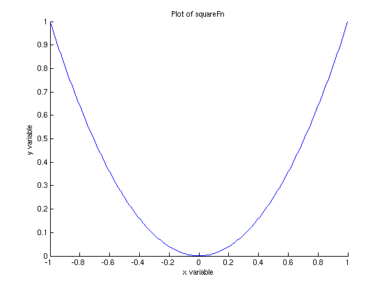

Example script for a simple single plot of a function
AH 2010.1.29
Contents
Plot parameters
xStart = -1; % starting x value xEnd = 1; % ending x value nPoints = 200; % number of points in plot
The function to plot
For this example, the function is called 'squareFn' and is defined in a separate file called squareFn.m.
Make x and y data vectors
x = linspace(xStart, xEnd, nPoints); % independent variable vector y = squareFn(x); % dependent variable
Make the plot, adding labels and a title
clf % clear the figure area, just in case hold on % lock the plot to be able to add other parts plot(x, y, 'b') % plot y vs. x, with blue line xlabel('x variable') % x label ylabel('y variable') % y label title('Plot of squareFn') % title for plot % add other elements to the plot here... hold off % unlock plot
Adding more curves, points, and so on...
The 'hold on' and 'hold off' lines above aren't necessary for this simple example, but are necessary to add more lines and so on to an existing plot. For instance, to add green crosses at points at x-coordinates w and y-coordinates z, add the command plot(w, z, 'g+') between the two holds. Use the help page for 'plot' to find options for points, lines, etc.